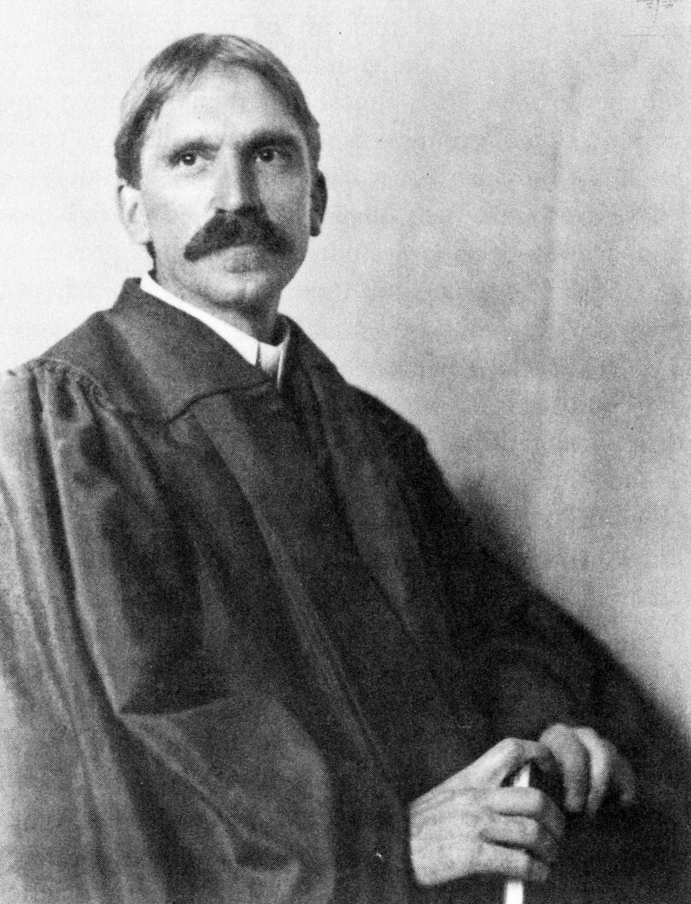
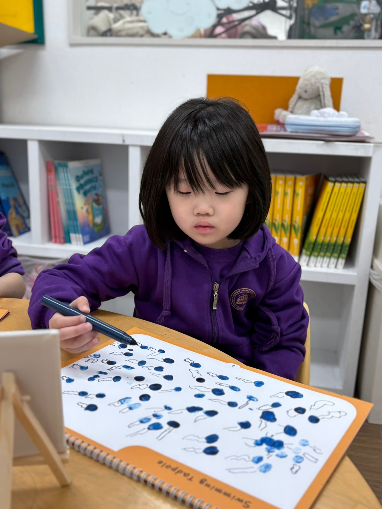

VISION & MISSION
스스로 생각하고 배움을 이어가는 사람으로

DEWFORD Mission
듀포드는 모든 아이의 출발점과 성장 속도를 존중하며,
경험과 탐구를 통해 읽고, 생각하고, 표현하는 힘을 키웁니다.
듀포드에서 스스로 배우고 성장하는 힘을 길러갑니다
경험과 탐구를 통해 읽고, 생각하고, 표현하는 힘을 키웁니다.
듀포드에서 스스로 배우고 성장하는 힘을 길러갑니다

DEWFORD Vision
자신 있게 생각하고 자유롭게 표현하며,
경험과 탐구를 통해 세상을 이해하고,
스스로 배우며 끊임없이 성장하는 사람으로 나아갑니다.
경험과 탐구를 통해 세상을 이해하고,
스스로 배우며 끊임없이 성장하는 사람으로 나아갑니다.
OUR APPROACH
아이의 성장에 맞춰 이어지는 배움
Confidence
01
자신의 생각을 말과 글로 표현하는 자신감
읽고 발견한 것을 자신의 말과 글로 표현하며, 생각을 전하는 자신감을 키웁니다.
Curiosity
02
스스로 질문하고 새로운 것을 알아보려는 호기심
일상에서 발견한 궁금증을 질문으로 이어가고, 탐구와 경험을 통해 답을 찾아갑니다.
다른 사람의 생각을 듣고 자신의 의견을 나누는 소통 능력
친구의 이야기에 귀 기울이고 자신의 생각을 나누며, 서로 다른 관점을 이해합니다.
Independence
04
학습을 계획하고 돌아보며 스스로 이어가는 힘
스스로 목표를 정하고 배움의 과정을 돌아보며, 다음 도전을 이어가는 힘을 기릅니다.